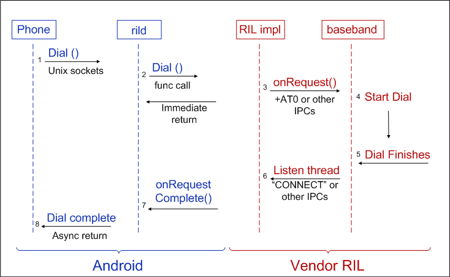

-
Documentation
- Introduction
- Dev Environment Setup
- Basic Bring up
- Multimedia
- Power Management
- Networking
- Telephony
- Testing
Introduction
Android's Radio Interface Layer (RIL) provides an abstraction layer between Android telephony services (android.telephony) and radio hardware. The RIL is radio agnostic, and includes support for Global System for Mobile communication (GSM)-based radios.
The diagram below illustrates the RIL in the context of Android's Telephony system architecture.

The RIL consists of two primary components:
- RIL Daemon: The RIL daemon initializes the Vendor RIL, processes all communication from Android telephony services, and dispatches calls to the Vendor RIL as solicited commands.
- Vendor RIL: The radio-specific Vendor RIL of
ril.hthat processes all communication with radio hardware and dispatches calls to the RIL Daemon (rild) through unsolicited commands.
RIL Initialization
Android initializes the telephony stack and the Vendor RIL at startup as described in the sequence below:
- RIL daemon reads
rild.libpath andrild.libargssystem properties to determine the Vendor RIL library to use and any initialization arguments to provide to the Vendor RIL - RIL daemon loads the Vendor RIL library and calls
RIL_Initto initialize the RIL and obtain a reference to RIL functions - RIL daemon calls
RIL_registeron the Android telephony stack, providing a reference to the Vendor RIL functions
See the RIL Daemon source code at //device/commands/rild/rild.c for details.
RIL Interaction
There are two forms of communication that the RIL handles:
- Solicited commands: Solicited commands originated by RIL lib, such as
DIALandHANGUP. - Unsolicited responses: Unsolicited responses that originate from the baseband, such as
CALL_STATE_CHANGEDandNEW_SMS.
Solicited
The following snippet illustrates the interface for solicited commands:
void OnRequest (int request_id, void *data, size_t datalen, RIL_Token t); void OnRequestComplete (RIL_Token t, RIL_Error e, void *response, size_t responselen);
There are over sixty solicited commands grouped by the following families:
- SIM PIN, IO, and IMSI/IMEI (11)
- Call status and handling (dial, answer, mute…) (16)
- Network status query (4)
- Network setting (barring, forwarding, selection…) (12)
- SMS (3)
- PDP connection (4)
- Power and reset (2)
- Supplementary Services (5)
- Vendor defined and support (4)
The following diagram illustrates a solicited call in Android.

Unsolicited
The following snippet illustrates the interface for unsolicited commands:
void OnUnsolicitedResponse (int unsolResponse, void *data, size_t datalen);
There are over ten unsolicited commands grouped by the following families:
- Network status changed (4)
- New SMS notify (3)
- New USSD notify (2)
- Signal strength or time changed (2)
The following diagram illustrates an unsolicited call in Android.

Implementing the RIL
To implement a radio-specific RIL, create a shared library that implements a set of functions required by Android to process radio requests. The required functions are defined in the RIL header (/include/telephony/ril.h).
The Android radio interface is radio-agnostic and the Vendor RIL can use any protocol to communicate with the radio. Android provides a reference Vendor RIL, using the Hayes AT command set, that you can use as a quick start for telephony testing and a guide for commercial vendor RILs. The source code for the reference RIL is found at /commands/reference-ril/.
Compile your Vendor RIL as a shared library using the convention libril-<companyname>-<RIL version>.so, for example, libril-acme-124.so, where:
- libril: all vendor RIL implementations start with 'libril'
- <companyname>: a company-specific abbreviation
- <RIL version>: RIL version number
- so: file extension
RIL_Init
Your Vendor RIL must define a RIL_Init function that provides a handle to the functions which will process all radio requests. RIL_Init will be called by the Android RIL Daemon at boot time to initialize the RIL.
RIL_RadioFunctions *RIL_Init (RIL_Env* env, int argc, char **argv);
RIL_Init should return a RIL_RadioFunctions structure containing the handles to the radio functions:
type structure {
int RIL_version;
RIL_RequestFunc onRequest;
RIL_RadioStateRequest onStateRequest;
RIL_Supports supports;
RIL_Cancel onCancel;
RIL_GetVersion getVersion;
}
RIL_RadioFunctions;
RIL Functions
ril.h defines RIL states and variables, such as RIL_UNSOL_STK_CALL_SETUP, RIL_SIM_READY, RIL_SIM_NOT_READY, as well as the functions described in the tables below. Skim the header file (/device/include/telephony/ril.h) for details.
RIL Solicited Command Requests
The vendor RIL must provide the functions described in the table below to handle solicited commands. The RIL solicited command request types are defined in ril.h with the RIL_REQUEST_ prefix. Check the header file for details.
| Name | Description |
|---|---|
void (*RIL_RequestFunc) (int request, void *data, size_t datalen, RIL_Token t); |
This is the RIL entry point for solicited commands and must be able to handle the various RIL solicited request types defined in
Must be completed with a call to |
RIL_RadioState (*RIL_RadioStateRequest)(); |
This function should return the current radio state synchronously. |
int (*RIL_Supports)(int requestCode); |
This function returns "1" if the specified RIL_REQUEST code is supported and 0 if it is not. |
void (*RIL_Cancel)(RIL_Token t); |
This function is used to indicate that a pending request should be canceled. This function is called from a separate thread--not the thread that calls On cancel, the callee should do its best to abandon the request and call Subsequent calls to
|
const char * (*RIL_GetVersion) (void); |
Return a version string for your Vendor RIL |
The vendor RIL uses the following callback methods to communicate back to the Android RIL daemon.
| Name | Description |
|---|---|
void RIL_onRequestComplete(RIL_Token t, RIL_Errno e, void *response, size_t responselen); |
|
void RIL_requestTimedCallback (RIL_TimedCallback callback, void *param, const struct timeval *relativeTime); |
Call user-specified callback function on the same thread that RIL_RequestFunc is called. If relativeTime is specified, then it specifies a relative time value at which the callback is invoked. If relativeTime is NULL or points to a 0-filled structure, the callback will be invoked as soon as possible. |
RIL Unsolicited Commands
The functions listed in the table below are call-back functions used by the Vendor RIL to invoke unsolicited commands on the Android platform. See ril.h for details.
| Name | Description |
|---|---|
void RIL_onUnsolicitedResponse(int unsolResponse, const void *data, size_t datalen); |
|